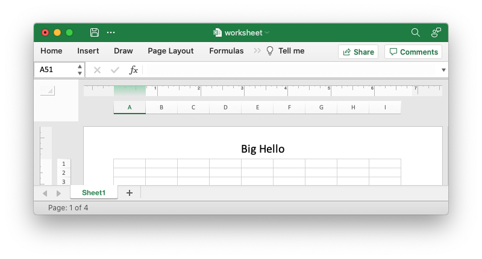

Adding Headers and Footers
Headers and footers can be added to worksheets using the
worksheet.set_header() and worksheet.set_footer() methods.
Headers and footers are generated using a string which is a combination of plain text and optional control characters.
The available control characters are:
| Control | Category | Description |
|---|---|---|
&L | Alignment | Left |
&C | Center | |
&R | Right | |
&[Page] or &P | Information | Page number |
&[Pages] or &N | Total number of pages | |
&[Date] or &D | Date | |
&[Time] or &T | Time | |
&[File] or &F | File name | |
&[Tab] or &A | Worksheet name | |
&[Path] or &Z | Workbook path | |
&fontsize | Font | Font size |
&"font,style" | Font name and style | |
&U | Single underline | |
&E | Double underline | |
&S | Strikethrough | |
&X | Superscript | |
&Y | Subscript | |
&& | Miscellaneous | Literal ampersand & |
Some of the placeholder variables have a long version like &[Page] and a short
version like &P. The longer version is displayed in the Excel interface but
the shorter version is the way that it is stored in the file format. Either
version is okay since rust_xlsxwriter will translate as required.
Headers and footers have 3 edit areas to the left, center and right. Text can be
aligned to these areas by prefixing the text with the control characters &L,
&C and &R.
For example:
worksheet.set_header("&LHello");

worksheet.set_header("&CHello");

worksheet.set_header("&RHello");

You can also have text in each of the alignment areas:
worksheet.set_header("&LCiao&CBello&RCielo");

The information control characters act as variables/templates that Excel will update/expand as the workbook or worksheet changes.
worksheet.set_header("&CPage &[Page] of &[Pages]");

Times and dates are in the user's default format:
worksheet.set_header("&CUpdated at &[Time]");

To include a single literal ampersand & in a header or footer you
should use a double ampersand &&:
worksheet.set_header("&CCuriouser && Curiouser - Attorneys at Law");

You can specify the font size of a section of the text by prefixing it with the
control character &n where n is the font size:
worksheet.set_header("&C&20Big Hello");

You can specify the font of a section of the text by prefixing it with the
control sequence &"font,style" where fontname is a font name such as Windows
font descriptions: "Regular", "Italic", "Bold" or "Bold Italic": "Courier New"
or "Times New Roman" and style is one of the standard Windows font
descriptions like “Regular”, “Italic”, “Bold” or “Bold Italic”:
worksheet.set_header(r#"&C&"Courier New,Bold Italic"Hello"#);

It is possible to combine all of these features together to create complex
headers and footers. If you set up a complex header in Excel you can transfer it
to rust_xlsxwriter by inspecting the string in the Excel file. For example the
following shows how unzip and grep the Excel XML sub-files on a Linux system.
The example uses libxml's xmllint to format the XML for clarity:
$ unzip myfile.xlsm -d myfile
$ xmllint --format `find myfile -name "*.xml" | xargs` | \
egrep "Header|Footer" | sed 's/&/\&/g'
<headerFooter scaleWithDoc="0">
<oddHeader>&L&P</oddHeader>
</headerFooter>
Note: Excel requires that the header or footer string be less than 256 characters, including the control characters. Strings longer than this will not be written, and a warning will be output.